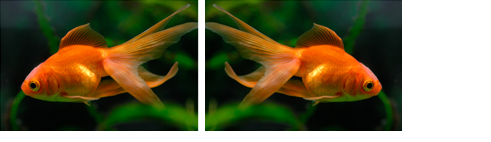

This topic demonstrates how to rotate an IWICBitmapSource by using an IWICBitmapFlipRotator component.
To flip and rotate a bitmap source
Create an IWICImagingFactory object to create Windows Imaging Component (WIC) objects.
// Create WIC factory
hr = CoCreateInstance(
CLSID_WICImagingFactory,
NULL,
CLSCTX_INPROC_SERVER,
IID_PPV_ARGS(&m_pIWICFactory)
);
Use the CreateDecoderFromFilename method to create an IWICBitmapDecoder from an image file.
HRESULT hr = S_OK;
IWICBitmapDecoder *pIDecoder = NULL;
IWICBitmapFrameDecode *pIDecoderFrame = NULL;
IWICBitmapFlipRotator *pIFlipRotator = NULL;
hr = m_pIWICFactory->CreateDecoderFromFilename(
L"turtle.jpg", // Image to be decoded
NULL, // Do not prefer a particular vendor
GENERIC_READ, // Desired read access to the file
WICDecodeMetadataCacheOnDemand, // Cache metadata when needed
&pIDecoder // Pointer to the decoder
);
Get the first IWICBitmapFrameDecode of the image.
// Retrieve the first bitmap frame.
if (SUCCEEDED(hr))
{
hr = pIDecoder->GetFrame(0, &pIDecoderFrame);
}
The JPEG file format only supports a single frame. Because the file in this example is a JPEG file, the first frame (0) is used. For image formats that have multiple frames, see How to Retrieve the Frames of an Image for accessing each frame of the image.
Create the IWICBitmapFlipRotator to use for flipping the image.
// Create the flip/rotator.
if (SUCCEEDED(hr))
{
hr = m_pIWICFactory->CreateBitmapFlipRotator(&pIFlipRotator);
}
Initialize the flip/rotator object with the image data of the bitmap frame flipped horizontally (along the vertical y-axis).
// Initialize the flip/rotator to flip the original source horizontally.
if (SUCCEEDED(hr))
{
hr = pIFlipRotator->Initialize(
pIDecoderFrame, // Bitmap source to flip.
WICBitmapTransformFlipHorizontal); // Flip the pixels along the
// vertical y-axis.
}
See WICBitmapTransformOptions for additional rotations and flipping options.
Draw or process the flipped bitmap source.
[!Note]
The IWICBitmapFlipRotator interface inherits from the IWICBitmapSource interface, so you can use the initialized flip/rotator object anywhere that accepts a IWICBitmapSource.
Â
The following illustration demonstrates flipping an imaging horizontally (along the vertical x-axis).

Â
Â